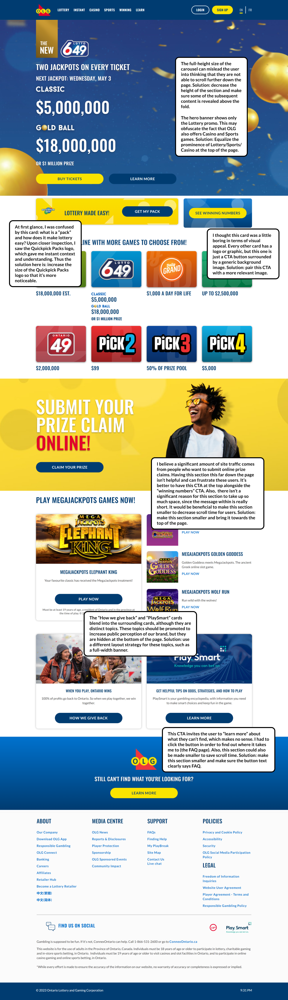

OLG Homepage Redesign
Revamping olg.ca
Task:
Redesign OLG's desktop site to boost customer appeal and retention. There are no restrictions as to which design approach can be taken.
My approach:
Although the design task was open-ended, I wanted to be realistic in the solution I provided. Although I personally was not a huge fan of the current colour scheme, I decided to keep it for two reasons:
- Redesigning the brand would be a province-wide endeavor, and would be extremely costly (all of the products and marketing material would have to be replaced!). Thus, it would not likely be approved by the executives.
- Lottery/casino games are very popular among the elderly. This demographic is likely to struggle with change, especially towards a more modern aesthetic and digital experience.
Solo designer
Figma
Step one:
I reviewed the current website and identified potential issues the user might have. I drew from my previous experience and coursework dealing with Jakob Nielsen's 10 Usability Heuristics to give an informed analysis. Below is a screenshot of the "before" page, annotated with the issues I found.

Putting it all together
Since most of the design elements were already in the OLG design system, I was able to skip the low-fidelity step and jump right into a high-fidelity design.
I decided to add a "Winners Spotlight" to get potential customers excited about winning. It also helps people discover new games to play by telling them who has won from them before.
Below is the mockup of the "after" version explaining my changes.
I added a filtering tool to the games section. This helps the company deliver more relevant games to the player while making the player feel like they're getting a special, personalized experience.

Figma Prototypes
You can click around hero image section to see how the images change.
Prototype 1: The entire flow (user is from a monolingual school)
Prototype 2: The external links page (user is from a multilingual school)
Alternate version
Here's an alternate design for the Winners section.
Final Thoughts
Overall, I sought to create an experience that was easier to navigate, more exciting and personalized, and more informative.
Next Steps
- To take this assignment a step further, I could mockup the mobile version of this page.
- If research was in scope for this project, I would test the new page to see if customer navigation and retention was indeed enhanced. I would pay special attention to the new section to see how much attention and clicks it's getting.